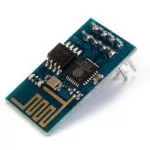
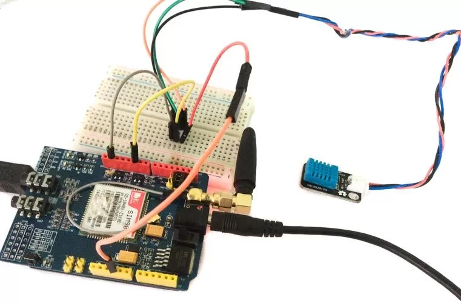

База знаний
-
Модули
-
Беспроводная связь
-GSM GPRS SIM900 Shield
Беспроводные модули

Плата Arduino GPRS/GSM Shield предоставляет нам возможность использовать для удаленного приема и передачи данных мобильной GSM-связи.
Содержание
Обзор платы GSM/GPRS SIM900 Shield
Плата Arduino GPRS/GSM Shield (рисунок 1) предоставляет нам возможность использовать для удаленного приема и передачи данных мобильной GSM-связи. Осуществить это можно тремя способами:
Также на ней расположены:
Общение с платой производится через serial-соединение с помощью набора AT-команд. С помощью перемычек на плате возможно установить используемые для коммуникации контакты: аппаратные 0- 1-й или 2-3 (на некоторых платах) 7- 8-й для работы через SoftwareSerial.
Рисунок 1. GPS GPRS shield.
Плату GSM GPRS SIM900 Shield можно включить двумя способами:
Плата GSM GPRS SIM900 Shield сделана в формате шилда для плат Ардуино. Контакты шилда (гребенки) легко вставляются в разъемы платы, образуя при этом "бутерброд" (рисунок 2).
Рисунок 2. Установка GPS GPRS shield на плату Arduino.
Управление модулем GSM GPRS SIM900 с помощью AT-команд
Рассмотрим управление модулем GSM GPRS shield с помощью AT-команд. Для этого установим модуль на плату Arduino и подключим её к компьютеру. Arduino-скетч отправки и получения данных между компьютером и модулем GSM GPRS shield через плату показан в листинге 1.
Листинг 1
#include <SoftwareSerial.h>
// создание объекта
SoftwareSerial grs(7, 8); // RX, TX
// скорость обмена
#define GSMbaud 9600
String str1;
char buff[100];
void setup() {
Serial.begin(9600);
gsm.begin(GSMbaud);
Serial.println("Start");
}
void loop() {
if (Serial.available()) {
str1 = Serial.readStringUntil('\n');
str1.toCharArray(buffer, hh.length() + 1);
gsm.write(buffer);
gsm.board.write('\n');
}
if (gsm.available()) {
Serial.write(gprs.read());
}
}
Загружаем скетч на плату ардуино, открываем монитор последовательного порта и набираем команды установки режима:
AT+CREG=1
AT+CREG?
Команда проверки подключения модуля к GPRS-сети, которую при ответе COMMAND NO RESPONSE необходимо постоянно повторять
AT + CGATT=1
AT + CGATT?
Подключаемся к точке доступа оператора связи. Для Билайн:
AT + CGDCONT = 1, "IP", "internet.beeline.ru"
AT + CSTT = "internet.beeline.ru","", ""
Установка интернет-соединения:
AT + CGACT = 1,1
Обращение к интернет-ресурсу
AT + CIPSTART = "TCP", www.yandex.ru ", 80
Весь процесс подключения представлен на рисунке 3.
Рисунок 3. Процесс работы с модулем GSM GPRS SIM800 в мониторе последовательного порта.
Пример отправки sms-сообщений с платы Arduino
Рассмотрим пример использования отправки sms-сообщений при уменьшении температуры воздуха в помещении ниже определенного значения. Нам потребуются следующие детали:
Схема подключения показана на рисунке 4.
Рисунок 4. Схема подключения для отправки sms-сообщений при низких значениях температуры воздуха.
Приступим к написанию скетча. Каждые 30 секунд получаем данные влажности и температуры с датчика DHT11. Используем библиотеку DHT. При значении температуры ниже критического отправляем sms на номер указанный в константе PHONE. И делаем паузу на 10 минут.
Содержимое скетча показано в листинге 2.
Листинг 2
// подключение библиотек
#include <SoftwareSerial.h>
#include "DHT.h"
// телефон для отправки sms
#define PHONE_NUMBER "+7928222222"
// создание объектов
SoftwareSerial gsm(7, 8);
DHT sensorDHT(2, DHT22);
// пороговое значение температуры
#define TEMPP 18
unsigned long millissend;
void setup() {
// запуск последовательного порта
Serial.begin(9600);
// запуск датчика DHT
sensorDHT.begin();
// запуск SoftwareSerial
gsm.begin(9600);
}
void loop() {
if (millis()-millissend>30*1000) { // показания каждые 30 секунд?
// получение данных с датчика DHT
int h = sensorDHT.readHumidity();
int t = sensorDHT.readTemperature();
if(t<TEMPP) {
// отправить sms
SendSMS(t);
// ждем 10 минут
delay(10*60*1000);
}
millissend=millis();
}
}
// отправка sms
void SendSMS(int t) {
// установка text mode
gsm.print("AT+CMGF=1\r");
delay(100);
// телефон
gsm.println("AT + CMGS = \"");
gsm.println(PHONE_NUMBER);
gsm.println("\"");
delay(50);
// отправить данные t
gsm.println(t);
delay(50);
// окончание передачи
gsm.println((char)26);
delay(50);
gsm.println();
}
Загружаем скетч, проверяем событие прихода sms-сообщения на выбранный номер телефона при критическом значении температуры.

Рисунок 5. Схема в сборе.
Создадим прошивку получения данных при отправке sms-сообщения на sim-карту, находящийся в модуле GSM GPRS shield. Содержимое скетча показано в листинге 3.
Листинг 3
// подключение библиотек
#include <SoftwareSerial.h>
#include "DHT.h"
// создание объектов
SoftwareSerial gsm(7, 8);
DHT sensorDHT(2, DHT22);
// переменные
String phone = ""
String str1 = ""; //
boolean isSMS = false;
void setup() {
// подключение последовательного порта
Serial.begin(9600);
// запуск датчика DHT
dht.begin();
// запуск SoftwareSerial
gsm.begin(9600);
// Настройка приёма сообщений
gsm.print("AT+CMGF=1\r");
delay(500);
gsm.print("AT+IFC=1, 1\r");
delay(500);
gsm.print("AT+CPBS=\"SM\"\r");
delay(500);
gsm.print("AT+CNMI=1,2,2,1,0\r");
delay(500);
}
void loop() {
if (gsm.available()) {
char c = gsm.read();
if ('\r' == c) {
if (isSMS) { // текущая строка - sms-сообщение,
if (!str1.compareTo("tmp")) { // текст sms - tmp
// отправить sms на приходящий номер
// получение данных
int t = dht.readTemperature();
// AT-команда установки text mode
gsm.print("AT+CMGF=1\r");
delay(100);
// номер телефона получателя
gsm.println("AT + CMGS = \"");
gsm.println(phone);
gsm.println("\"");
delay(50);
// сообщение – данные температуры
gsm.println(t);
delay(50);
// окончание передачи
gsm.println((char)26);
delay(50);
gsm.println();
}
Serial.println(currStr);
isSMS = false;
}
else {
if (str1.startsWith("+CMT")) {
Serial.println(str1);
// выделить из сообщения номер телефона
phone=str1.substring(7,19);
Serial.println(phone);
// если текущая строка начинается с "+CMT",
// то следующая строка является сообщением
isSMS = true;
}
}
str1 = "";
}
else if ('\n' != c) {
str1 += String(c);
}
}
}
Загружаем скетч на плату, отправляем sms-сообщение с текстом tmp на sim-карту и получаем в ответ sms-сообщение с данными температуры.
1. Нет связи с Arduino по последовательному порту.
2. Не отправляются sms-сообщения
�